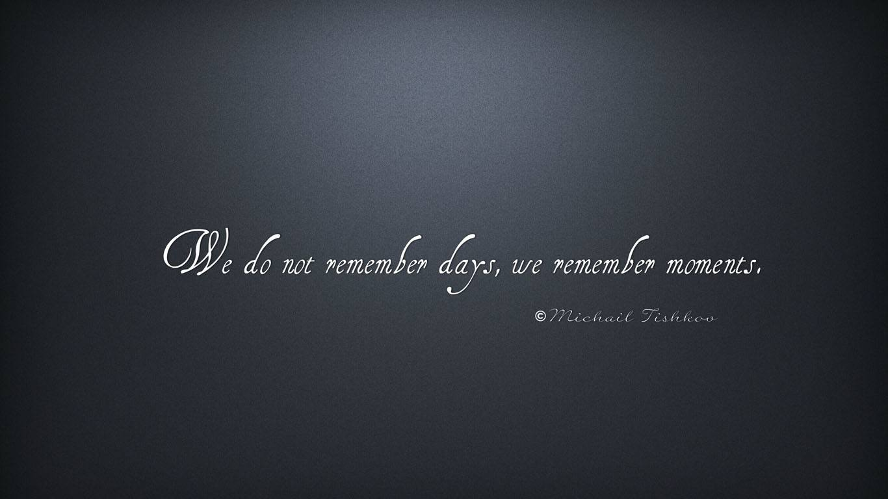

轮播图1
Nulla vitae elit libero, a pharetra augue mollis interdum.

轮播图2
Nulla vitae elit libero, a pharetra augue mollis interdum.

轮播图3
Nulla vitae elit libero, a pharetra augue mollis interdum.
Nulla vitae elit libero, a pharetra augue mollis interdum.
Nulla vitae elit libero, a pharetra augue mollis interdum.
Nulla vitae elit libero, a pharetra augue mollis interdum.
| # | first | second | third | forth | fifth |
|---|---|---|---|---|---|
| 1 | penatibus et magins | what | messages | 56 | |
| 2 | penatibus et | you | information | 44 | |
| 3 | nulla non | test | testing | 32 |
According to one of the world's leading specialist in ancient inscriptions, Andre Lemaire of the Sorbonne University in Paris, the Aramaic words etched on the box's side show a cursive form of writing used only from about 10 to 70 AD. Ancient inscriptions are typically found on royal monuments or on lavish tombs, commemorating rulers and other official figures. But Jesus, who was raised by a carpenter, was a man of the people, so finding documentation of his family is unexpected. The find is also significant in that it corroborates the existence of Joseph, Jesus' father, and James, Jesus’ brother and a leader of the early Christian church in Jerusalem. The family relationships contained on the ossuary helped experts uncover that the inscription very likely refers to the biblical James, brother of Jesus. the mention of a brother is unusual, indicating that this Jesus must have been a well-known figure.

Russia plans to create long-term base on moon